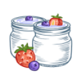

ПРИГОТОВЬТЕ ДОМА НАСТОЯЩИЙ ЙОГУРТ
С заквасками VIVO вы легко сможете приготовить живой натуральный йогурт, кефир, творог и другие
продукты. Свежие уисломолочные продукты домашнего приготовления не содержат вредных добавок, лишь молоко
и полезные пробиотические бактерии.
Свежий, натуральный и без вредных добавок
Домашний йогурт по-настоящему свежий, ведь вы точно знаете когда он был приготовлен. И в его
составе вы точно уверены: лишь молоко и бактерии закваски. А для отличного вкуса вы можете
добавить в него любимые ягоды, фрукты, орехи. Все как вы любите!
Полезен и детям, и взрослым
Благодаря 100% натуральному составу домашний йогурт и творог подходит всем членам вашей
семьи -
как взрослым, так и детям. А для самых маленьких в ассортименте VIVO есть специальная
закваска
Бифивит.
Крепкий иммунитет рождается в кишечнике
Специальные штаммы бактерий заквасок VIVO способны укрепить иммунитет и снижают риск
простудных
заболеваний, ОРВИ и кишечных расстройств.
Полезные бактерии для пищеварения
Домашние кисломолочные продукты - действительно живые продукты. Благодаря уникальным
бактериальным составам заквасок VIVO они содержат особые пробиотические бактерии, улучшающие
пищеварение и обмен веществ с клинически доказанной эффективностью.
Будь в форме с VIVO
Домашний йогурт и творог - отличный источник белка и кальция, притом без лишних добавок и
сахара. А особая бактерия закваски Fit-йогурт L. gasseri ускоряет обмен веществ.
Употребление таких продуктов способствует как набору чистой мышечной массы, так и снижению
процента жира.
Больше пользы за меньшие деньги
С заквасками VIVO вы получаете кисломолочные продукты наилучшего качества, абсолютно
натуральные и богатые полезными бактериями. И цена таких продуктов выходит в несколько раз
дешевле промышленного йогрута премиум марок. Экономьте с умом, без ущерба качеству!
Приготовить легко!
Приготовить домашний йогурт сможет каждый
Это очень легко. Понадобится молоко, закваска, обычная кастрюля и большое полотенце. А мультиварка или
йогуртница сделают процесс приготовления еще проще и быстрее.
-
Подогрейте молоко до температуры +37..+40 °С. Добавьте закваску, перемешайте.
-
 Заверните кастрюлю в большое полотенце, чтобы смесь не остывала. Оставьте сквашиваться на 6-8 часов.
Заверните кастрюлю в большое полотенце, чтобы смесь не остывала. Оставьте сквашиваться на 6-8 часов. -
После загустения охладите продукт. Перед употреблением можно добавить фрукты, орехи или мед.
-
Добавьте закваску в молоко. Перемешайте.
-
Разлейте смесь по стаканчикам йогуртницы.
-
Включите йогуртницу согласно инструкции к ней.
-

Йогурт будет готов через 8 часов.
-
Добавьте закваску в молоко. Перемешайте.
-
Включите мультиварку в режим «йогурт» или «40 ˚С». Время приготовления – 8 часов.
-
 Охладите йогурт. Подайте к столу.
Охладите йогурт. Подайте к столу.
-
Добавьте закваску в бутылку или пачку молока. Взболтайте.
-
Поставьте молоко в йогуртницу VIVO Yogobox и включите ее.
-
Через 8 часов йогурт готов. Охладите и подайте к столу.
Ассортимент заквасок vivo
-
Йогурт
- Настоящий йогурт без добавок
- Нормализует пищеварение
- Укрепляет иммунитет
-
Кефир
- Настоящий кефир
- Улучшает метаболизм
- Способствует нормализации веса
-
Пробио йогурт
- Восстанавливает микрофлору
- Нормализует процессы пищеварения
- Содержит 8 видов бактерий
-
 Fit Йогурт
Fit Йогурт- Ускоряет метаболизм
- Способствует похудению
- Источник белка и кальция
-
 Творог
Творог- Настоящий творог
- Гарантия свежести и натуральности
- Содержит кальций и белок
-
Бифивит
- Кисломолочный прикорм для детей
- Восстанавливает баланс микрофлоры
- Нормализует пищеварение
-
Греческий Йогурт
- Густой средиземноморский йогурт
- Насыщенный кисломолочный вкус
- Менее вязкая консистенция
-
Набор заквасок
- Четыре разных закваски в одной упаковке
- Закваски для йогурта, творога, кефира и иммуновита
-
Иммуновит
- Укрепляет иммунитет
- Уменьшает риск простуды и ОРВИ
- Отличный вкус и густая структура